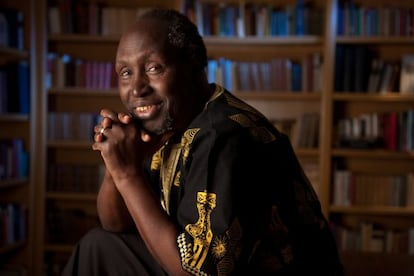

Podafro
ngũgĩ wa thiong’o
Descrição do video
Nesse video falamos sobre o escritor ngũgĩ wa thiong’o, falamos sobre suas vivencias e curiosidades sobre ele.
ngũgĩ wa thiong’o
ngũgĩ wa thiong’o é um dos escritores africanos mais importantes do século xx. nascido no quênia em 1938, ele começou escrevendo em inglês, mas decidiu adotar sua língua materna, o gĩkũyũ, como forma de resistência cultural. autor de romances, peças de teatro e ensaios, ngũgĩ ficou conhecido por denunciar injustiças sociais e políticas, além de defender o valor das línguas africanas. sua prisão em 1977 e seu longo exílio transformaram sua trajetória em símbolo de coragem e luta pela liberdade.


Africa
a áfrica é o segundo maior continente do mundo, com 54 países e uma diversidade cultural, linguística e natural impressionante. é considerada o berço da humanidade e possui uma história marcada por civilizações antigas, como egito, mali e etiópia. apesar dos desafios atuais, como desigualdades sociais e heranças do colonialismo, a áfrica é um continente vibrante, com juventude criativa, riqueza cultural e grandes potências naturais que continuam a influenciar o mundo.
Equipe
Grabriela - apresentadora
Larisa - apresentadora, editora
Brenon - convidado
Leonardo - convidado
Wellinton - convidado, dev web
Joice - convidada
Felipe - camera
Kaue - camera